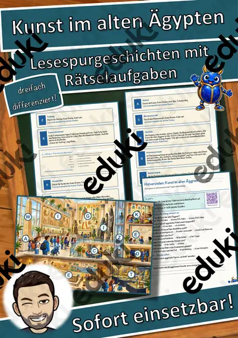
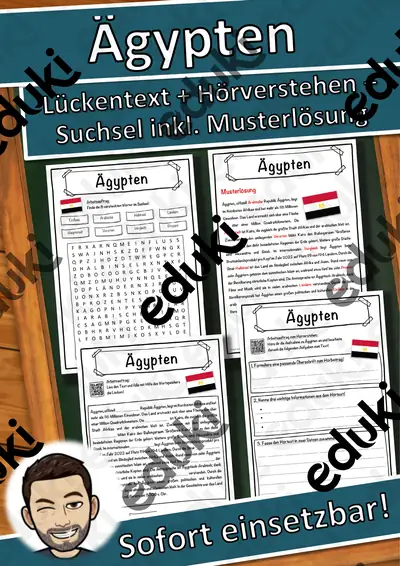
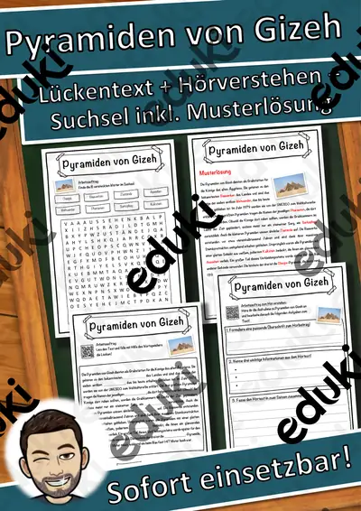

Das alte Ägypten: Arbeitsblätter für Klasse 4–7 (Geschichte)
Das Alte Ägypten gehört in Klasse 5 und 6 zu den frühen Hochkulturen. Die Lernenden erfahren, wie Nil, Herrschaft und Glaube das Zusammenleben prägten.
Zum Themenkern zählen Pharao, Pyramiden und Hieroglyphen. Als Vertiefung bieten sich Mumien und Nil an, am Ende steht oft Götterwelt.
Wo genau im Lehrplan das Thema steht, unterscheidet sich von Land zu Land, häufig im Fach Geschichte in den Klassen 4 bis 7. Gemeinsames Ziel: die Lernenden erklären die Bedeutung des Nils und der Pharaonen für den ägyptischen Staat.
Ob Vertretungsstunde, Stationenarbeit oder Hausaufgabe: Die Arbeitsblätter zu Das alte Ägypten lassen sich flexibel einsetzen, etwa mit Pharao als Auftakt und Götterwelt als Abschluss. Musterlösungen sparen die Korrekturzeit. Zur Differenzierung eignen sich die Lesespurgeschichten mit ihren drei Niveaustufen.
Die Auswahl zum Thema umfasst derzeit 14 Titel, zum Beispiel Materialpaket Steinzeit und Ägypten, Steinzeit, Kunst im alten Ägypten und Ägypten Lückentext mit Wortspeicher. Dazu zählen 1 Lesespurgeschichte und 8 Lückentexte mit Hörverstehen für Klasse 3–7. Eigene Namen in Hieroglyphen als Kartusche gestaltet motiviert und führt zur Frage, wie Schrift funktioniert.
Das gehört zum Thema
Passende Arbeitsblätter und Materialpakete

Materialpaket Steinzeit und Ägypten, Steinzeit, Ägypten

Kunst im alten Ägypten – Lesespurgeschichte mit Rätselaufgaben (Klasse 6)

Ägypten Lückentext mit Wortspeicher Hörverstehen und Suchsel

Pyramiden von Gizeh Lückentext mit Wortspeicher Hörverstehen und Suchsel

Pharao Lückentext mit Wortspeicher Hörverstehen und Suchsel

Tutanchamun Lückentext mit Wortspeicher Hörverstehen und Suchsel

Hieroglyphen Lückentext mit Wortspeicher Hörverstehen und Suchsel

Fluch des Pharaos Lückentext mit Wortspeicher Hörverstehen und Suchsel

Mumie Lückentext mit Wortspeicher Hörverstehen und Suchsel

Altes Ägypten Lückentext mit Wortspeicher Hörverstehen und Suchsel

Kunst Äypten: Lesezeichen Ägypten

Tafelmaterial Ägypten

Ägypten - Suchspiel inkl. Lösung (auch Homeschooling)

Ägypten, Hieroglyphen Ägypten, (auch Homeschooling) Ägypten
Häufige Fragen
Für welche Klassenstufe passen die Arbeitsblätter zu Das alte Ägypten?
Der Schwerpunkt liegt auf Klasse 6; insgesamt deckt die Auswahl (14 Titel) Klasse 3–7 ab. In der Beschreibung jedes Materials steht die empfohlene Stufe.
Welche Inhalte decken die Materialien zu Das alte Ägypten ab?
Die Materialien arbeiten an Pharao, Pyramiden und Hieroglyphen und gehen dann weiter zu Mumien, Nil und Götterwelt. Vorab lohnt ein Blick in den Lehrplan des eigenen Bundeslandes.
Wie setze ich Das alte Ägypten im Unterricht ein?
Beginnen Sie mit einem Einstieg zu Pharao und ergänzen Sie nach Bedarf. Eigene Namen in Hieroglyphen als Kartusche gestaltet motiviert und führt zur Frage, wie Schrift funktioniert.
Mehr Material nach Fach und Klasse
Verwandte Lehrplanthemen
- Länder der Erde (Erdkunde, Klasse 5–10)
- Steinzeit (Geschichte, Klasse 3–6)
- Antikes Griechenland (Geschichte, Klasse 5–7)
- Mittelalter, Ritter und Burgen (Geschichte, Klasse 4–8)
- Römisches Reich (Geschichte, Klasse 5–7)